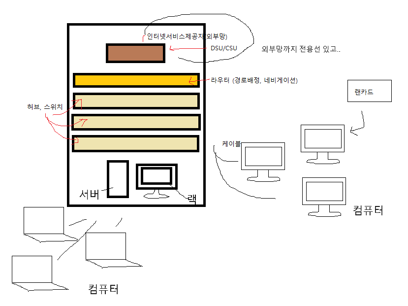

일반: internet walking
고유: internet->inter networking
(TCP/IP로 이루어진 네트워크들과의 연결)
통신: 데이터를 주고 받는 것
웹브라우저 + 웹서버를 연결 시켜주는 규칙
(https:)//www.XX.com
상업 TCP - 교육 TCP
/ /
군사망 TCP
TCP 여러 망들이 있었음
이제 하나의 단일망으로 만듬.
⭐ 인터넷이란?
인터넷은 여러 TCP/IP로 이루어진
네트워크들과의 연결이며 하나의 단일망이다.
부가설명: (컴퓨터 - 컴퓨터) 정보공유를 위한 모든 기술이자
7개의 레이어로 이루어진 인터넷 규칙이 있다.

오타: L6 -> 표현입니다.
시험은 아니고 자격증 지식
P = protocol (95% 확률로 맞음)
I = internet & intormation
T = transfev mission 전송
C = control (커뮤니케이션 보다 컴트롤 확률 높음)
N = network (네트워크)
M = management & message
A = address (뜻: 나 자신)
UTP선 = 노방패 꼬인 쌍선
(이름: 언쉴드 트위스트페어 케이블, 비차페)
(원리: 두가닥씩 꼬아서 전기 자기장 생성)
TCP(트랜스미션 컨트롤 프로토콜) >
연결 설정 후 데이터 전송(직접적, 통화 등) > 신뢰성 높음
네트워크의 끝
IP어드레스 10만 개나 할당 가능하다 함
남아서 모든 사물에 IP줘도 될 거 같다 하심.
인터넷 - IOT 인터넷 오브 띵스 -> 사물 인터넷
네트워크의 끝 = ⭐ 사물 인터넷
중요X - 네트워크 크기 순서
LAN랜 > MAN만 > WAN완
네트워크 기술
블루투스 > 근거리를 무선으로 연결(파란이빨..)
(예시: NPC도 근거리 통신망)
블루투스 역사와 ⭐TCP P의 뜻 이미지
(사진 중간 내용은 이미 위에 적음)

일반구성 LAN에서의 네트워크 장비

흔한 네트워크 구성 요소들
연결하는 어댑터 종류(랜카드 종류의)
10 Base 2
10 Base 5
10 Base T
10: 속도 (10=10M, 100=100M, 1000=1000M(1G))
Base
2, 5, T: 거리 (2=200M, 5=500M, ⭐T=100M(트위스트페어))
신호증폭장치(리피터)
100 Base 5 거리 부족하면 사용
아날로그증폭: 잡음 +
디지털증폭: 잡음 -
UTP(언쉴드 트위스트페어)(노방패꼬인쌍선)(비차페)케이블
두 가닥씩 꼬아서 자기장 폐쇄하는 성질
그 외 STP FTP 같은 것도 있음.
램케이블 색상 순서는?
⭐ 백등 등 - 백녹 - 청 백청 - 녹 - 백갈 갈 ⭐
네트워크 (토폴로지) 트리형
MAC 매체(통신로)(검색: 매체접속제어)
Media 매체(통신로)
Access 접근
Control 제어
전송방식 간단소개
- 순서대로
- 경쟁(달려!!)
(이 아래에선 전송방식 소개 시작)
시험 예상 문제는 ⭐ 그림으로 경쟁방식 적으시오
그 정도로 낼 수 있다고 한다
ALIHA(알로하) & Slot ALOHA(슬롯 알로하)
1. ALOHA는 마구잡이로 보내도록 열어둠.
시간이 겹치는 부분이 부분충돌로 나던 완전충돌로 나던
데이터는 소멸 되어서 18%만 보내짐.
2. Slot ALOHA는 시간단위를 만들어서
Slot의 시작점에서부터 보내도록 함.(예시: 1초마다)
그러므로 부분충돌X 되고 완전충돌은 그대로
38% 정도 전송이 되었음.
CSMA, CSMA/CD, CSMA/CA
3. CSMA(carrier, Sense, Meltiple, Access)
- c옮기다 s센스 m멀티플 a접속(접근) = 다중접속
⭐ (1) 통신로를 살핀다(carrier이 있나 없나)
(2) 캐리어 있으면 기다리는 식
캐리어(데이터전송) 아무도 없으면 전송
(3) 다른 데이터 멀리서 와서 못 보고 전송 되면
중간에 충돌 일어날 수 있음(간호 - 교수님 - 간호)
그 충돌을 *Collision(콜리젼)*이라고 함 ⭐
4. CSMA/CD
(C: collision D:detection = 충돌검출)
CMSA & CMSA/CD 차이
원래 CSMA = 데이터 전송 후
데이터 전달 잘 됐다고 보고하러 올 때까지 기다려 봐야 함
오면 그렇구나 하지만 올 시간까지 안 오면
알아서 충돌이라도 났구나 해야 함.
CSMA/CD = 충돌이 나면 5초 만에 충돌이라 뜸
원래 가는데 10초 오는데 10초 20초였다면
5초부터 충돌 나도 합쳐서 10초임
그 충돌 문자 개념을 jamming이라고 함.
별로 안 기다려도 됨! 장점: 지연시간 단축!
5. CSMA/CA(잘안씀)
(C: collision A:avoidance = 충돌 회피&기피)
통신로에 올 만한 애들에게
하나하나 데이터 전송 안 쓸 건지 물어보고 전달
장점: 충돌X
단점: 다 물어보느라 오래 걸림
token-ring, doble ring, slot ring
6. token-ring(R.R스타일)
A|D|data|O|0 이런 토큰이 돔
AD - 헤더파일(주소, 목적지) / OX 토큰상태살아있음 / 0상호작용X 1파일전송완료
토큰을 가진 자만 데이터 전송
원을 돌면서 D가 주소 보니 내꺼네 싶으면
bata O 1 으로 토큰을 변경 후 보냄
A가 토큰 1로 된 걸 받으면
아 잘 받았구나 하며 다른 애한테 또 전송
A가 전송하면 BCD 기다림
7. doble ring(토큰조기해제버전)
토큰 조기해제로 링 두 개 됨
쓰고나면 바로 넘기고 바로 넘김
원리 자체는 토큰링과 비슷한데
평소엔 바깥 링에서 돌다가
문제 생기면 안쪽 보조링 사용.
기다림이 심해서 바로바로 보내기 위함.
8. slot ring
이것도 토큰이 돌아가는 방식
원 안에 데이터를 저장하는 슬롯링
데이터가 차 있으면 단 곳으로 토큰 보내버림
남는 공간이라면 데이터 저장
대역폭 예시 = 네트워크 흐름이 밀리면 빨간불 나오는 듯
대학교에서 애들이 불법파일 다운 할 때 그랬다 함.
- 마지막 남기신 말씀
포렌식은 16진수 알아야 이해 가능
우리 네트워크는 경쟁방식이다.
방식은 1. 경쟁 2. R.R 방식이 있다.
이더넷 (L2 데이터링크 쪽)
(예시: 패스트이더넷, 기가이더넷, 10기가이더넷)
아이폰, 갤럭시 처럼 상표긴 함.
이더넷 통신원리 = CSMA/CD (이더넷이 채택한 방식)
이유: 충돌이 나면 빨리 알려주는 CD 방식을 채택함.
CSMA / CD 철자
다중 접속시 전송감지
carrier Sense Multple Access
Collision Detection
데이터 -> 충돌(Collision) <- 데이터
충돌신호(Jam신호)
충돌 나면 그땐 일정시간 후 재전송 하라 뜸 <
근데 그 일정시간은 CSMA CSMA/CD 원리 알면 앎
10초 가고 10초 오길 기다리는 스타일과
10초 오고가지만 충돌 나면 5초만에 답장 오는 스타일
실제 이더넷에서 데이터를 전송할 때 사용되는 MAC주소
⭐ MAC주소(L2 데이터 링크 쯤)
- Physical(물리적인) Address
- 하드웨어 주소
- MAC주소
- ⭐ 랜카드 고유넘버
컴퓨터의 진짜 주소
IP와 MAC은 한 쌍이다.
MAC 주소 형태 00-06-C4-02-05-1B (24bit)
00-06-C4 네트워크회사고유주소
02-05-1B 제조회사에서 임의로 제조한 번호
진짜 주소 = 하드웨어 주소 (IP아님)
램카드 바꾸지 않는 한, 고유주소는 안 바뀜.
⭐ IP 주소는 바꿀 수 있고 하드웨어 주소만 못 바꿈
MAC, IP, DNS 등 주소 바꾸는 과정을 > 스포핑이라 부름
MAC스포핑 IP스포핑 DNS스포핑
인터넷 (문자) http://www.naver.com
↑(⭐DNS) ↓(⭐DNS 도메인네임시스템)
⭐역으로 요청해도 DNS / 알기쉬운 문자로 변환
숫자주소 (IP) 65.XXX.XXX.XXX
↑(⭐리버스) ↓ (⭐ARP 요청)
MAC에서 숫자를 역으로 요청RARP / IP에서 MAC으로
MAC 주소 00_06_XX_XX_XX_XX
숫자주소 L3(네트워크층)
MAC주소는 L2(데이터링크층)
Port 번호는 L4(전송층)
ARP(어드래스 레전드셜 프로젝트)
DHCP - Dynamic, Host, Cinfiguration, Protocol
신호증폭장치 리피터 L1(물리계층)
LAN 안에서 네트워크 증폭
(10M속도) 10 Base 5 (500m거리)